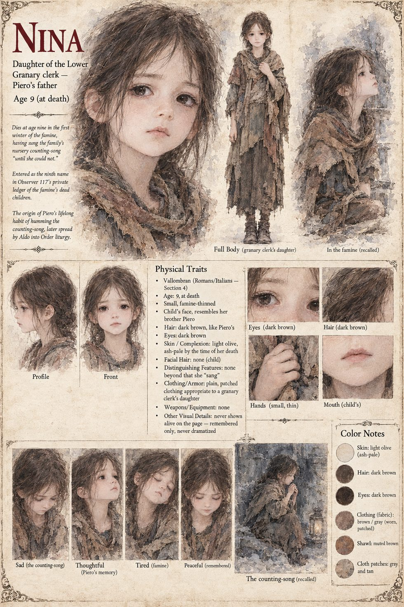

Nina
Daughter of the Lower Granary clerk · Piero's sister · 9 years old at her death
Nine winters old when she dies in the granary house, on the second night of the first winter of the ash, having sung her mother's nursery counting-song, eleven verses of loaves, lamps and a door that is always warm, until she could not. She is the ninth entry in Severin's private table of the dead children he can name. She is never shown alive; her sheet draws her only as she is remembered. Her brother Piero goes on singing the song under his breath, in threes, through the three years before the Standing Noon and the thirty-one after, as though the tune were a column that had to be carried forward or the whole account would fail to balance.
The song outlives them both. Aldo has the novices of the Order taught to hum it through the evening reading, and in the mouths of several thousand people who never met her mother it becomes a liturgy.
“Nina, daughter of the Lower Granary clerk, aged nine winters; sang.”